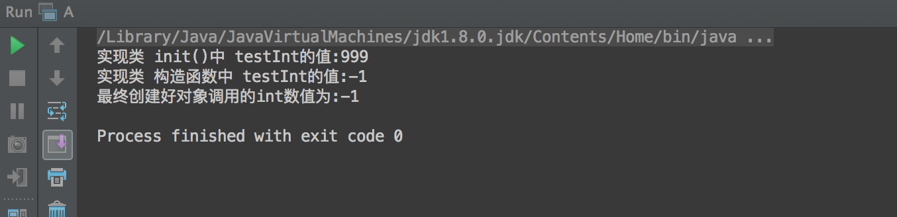
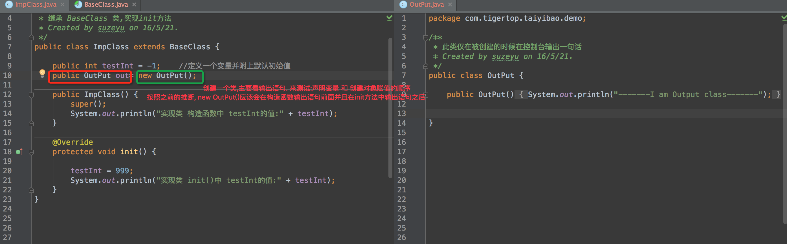
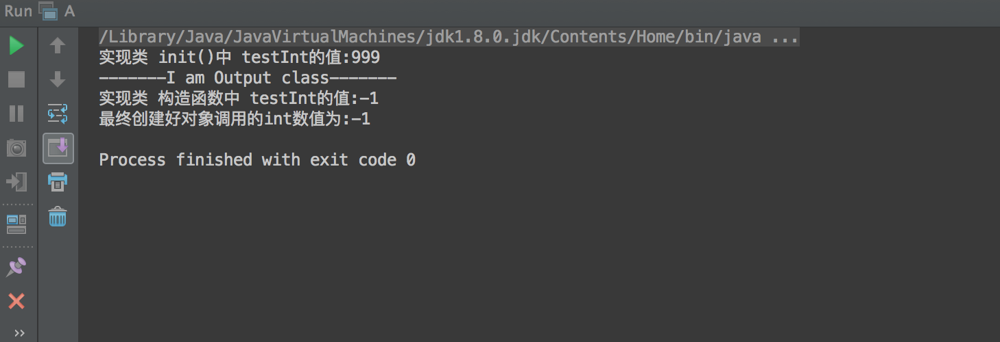
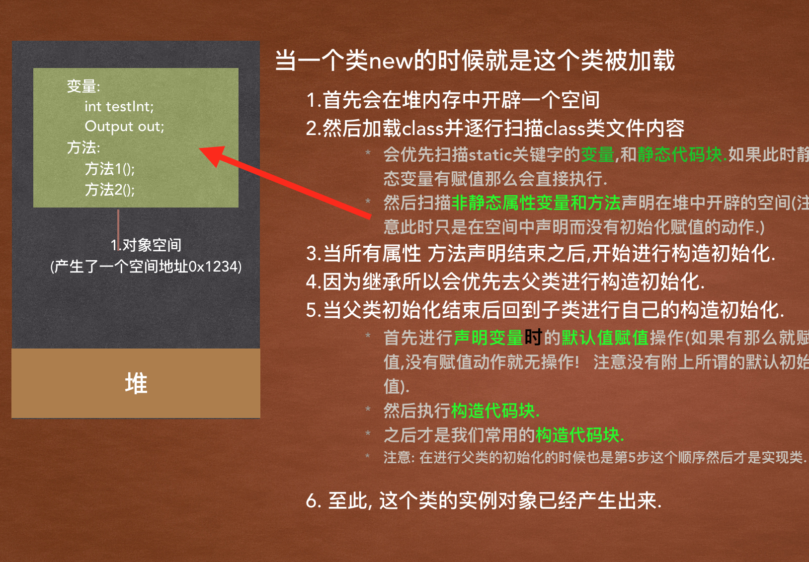

用输出来显示出类究竟是如何被加载的,以及到底以什么样的顺序来进行的初始化,可以让我们跳过一些不必要的麻烦…
错误场景:
在一个activity中, 利用的pager类+viewpager实现显示界面. 四个界面pager类继承了一个basepager的抽象类. 抽象类的构造函数中调用了一个抽象方法init(); 当子类实现是,实现basepager的抽象方法并在实现具体的初始化动作.
出现莫名问题
有一个pager加载了地图. 所以在最外面activity中要关联生命周期方法. 但是明明pager类中的地图对象已经创建, 但是在activity用pager.mapclient却发生了空指针!! 调试半天已经开始怀疑人生. 接下来直接用简单的java代码来复现遇见的问题.
模拟错误代码
首先看这三个简单的类

很简单, 定义一个抽象类BaseClass,并在构造函数中调用抽象方法init(). 然后子类ImpClass继承BassClass实现抽象方法在方法里面对声明的一个成员变量进行赋值999. 然后A类main函数创建这个子类ImpClass并取出这个函数的值打印.
想想testInt结果应该是多少?
我们可以顺一下对象的创建流程.
new了一个ImpClass, 首先会进行类的加载.在堆中开辟空间然后声明类中的testInt变量等.- 调用构造函数进行初始化操作, 因为继承了BaseClass所以在调用ImpClass构造的时候会先调用
super()调用父构造函数. - 执行父类构造函数调用了抽象
init(),因为具体的实现方法在子类所以找到BaseClass子类的init()执行.这里对testInt变量进行了999赋值. - 回到BaseClass类中的继续执行自己的构造方法进行初始化. 这里没有任何操作.
- 此时最后一次赋值应该是999.
但是结果真的是这样吗
testInt结果竟然是声明变量时的初始值,而不是最后的赋值操作.
看到这里想一想可以看出. ImpClass子类中声明的变量是最后一步执行的. 所以造成了init()的赋值被最后的类对自己属性进行默认初始化的时候覆盖了之前的值.
我们证实一下自己的想法. 看看声明变量时候的赋值动作究竟是什么时候触发的.
我们手动的在声明一个成员变量就new一个对象赋给这个变量. 看看输出语句究竟一个什么样的顺序.
看一下输出结果
ok! 之前的猜想没有错,代码就是最好的说明
那为什么会这样.看一下这个图的说明:类加载的过程
我们把一个类被加载到内存的时候的需要走的执行代码全部补全看一下输出. 对比一下上图
子类ImpClass

辅助检测类

查看一下结果

总结:
如果使用了继承 接口一些并有在接口进行一些初始化动作的抽象方法, 就要注意声明变量时的是否赋默认初始值的行为.例如
public int testInt = -1; //定义一个变量并附上默认初始值
public OutPut out= new OutPut();
掌握好其中的步骤,才能让自己不会处于被动. 即使遇见也可以迎刃而解.